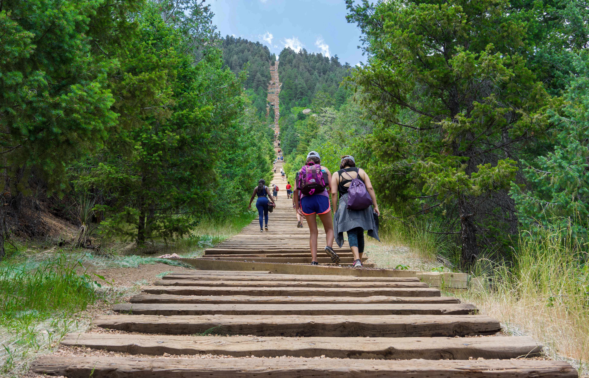

This week was probably not the most exciting week ever, but a few exciting things did happen, as well as a few things that I can probably talk about for a little while. I've spent a decent amount of time this week (probably drinking too much coffe and) just sort of thinking out loud to myself. I even spent the majority of my 2 and a half hour drive home just thinking about stuff, as opposed to listening to a podcast or something. It's actually quite a refreshing change of pace. What it feels like to me is practice. You can spend all of this time listening to podcasts, music, etc. and watching the news and hear and think about other people's ideas all day long, but at some point you need to sit down and just think of ideas for yourself. They can be stupid ideas or brilliant ones. It doesn't matter, because all that really matters is that you spend some time coming up with them. I think in that sense, this blog will be good for me, cause I'll get to spend some time expounding on my (somtimes terrible, sometimes pretty interesting) ideas.
The biggest advantage of not having any kind of clearance yet is that I can talk fairly freely about my work. And this week was a fairly boring one (although valuable). On Monday, I made some solid progress on re-connecting the new code I'm writing for the lab to work with the servo motors. Basically making it so that we can tell our little lab simulator where we want the satellite and the observer cube-sat to be, then send them there.
But as I was making this progress, I hit a little snag: One of the motors burned out, because we had too much voltage on it, and the way the satellite was balanced didn't make any sense. It took way too much torque to get that little guy to spin around. So I rebalanced everything and we ordered some slightly stronger motors. Which will be great, but until we get the new motors in, I have to switch gears.
So I decided to work, for the entire rest of the week (and probably into next week) on resuming my Codecademy lessons. I have to learn web development in order to work on another project, so there's a set routine of online classes and stuff I'm supposed to do. Incredibly boring, but it does mean that I can learn tools that will be very useful on this website I'm building. So the timing is really quite nice.
This week my diet was less than ideal. I actually started out really strong. I had told myself that I was going to only eat Huel Monday through Thursday this week, in an effort to treat my body right after eating so much over the weekend. And for a whole day and a half it worked. But by the end of the second work day I was really craving the dopamine rush of a good fried meal, so I got some Panda Express. Which domino effected into the rest of my week. The next day we got chinese as an office, then I had Chick-Fil-A the next day and Fazoli's on the way home the next. So not a good second half (or like, 3/5) of the week. Next week I will try to do better. I think I'm going to attempt something like intermittent fasting this week, mainly because I already kind of do eat like that. But it might keep me from munching on some morning bagels or whatever.
Man, is it a rough time for my climbing at the moment. My finger bothers me so quickly that I can really only climb once or twice a week right now. I have scheduled an appointment to see a PT next week though with my new insurance. So hopefully we can start working on that. But I climbed in the gym Monday, and just yesterday Rachael and I went to a ninja warrior gym. Which I gotta say was pretty interesting. In a lot of ways, I think some of those obstacles would be not too hard if I were still in my top condition, but my upper body strength is really lacking right now, in comparison to how it has been. And my coordination was crap. But, some of the obstacles weren't really all that hard. The salmon ladder wasn't too bad. And some of the swingy-type obstacles were pretty easy physically, just a bit heady. If I practiced a bit at jumping into the air and grabbing bars, I think I'd get pretty good. My balance also wasn't too bad, probably thanks to the rehab stuff I've been doing for my ankle.
So, school is sort of beginning to pick up, which is going to make things interesting, but harder. Speaking of which, I should probably spend some time today working on my second homework assignment. So far it's just been papers, which is annoying, cause I'd like to show off all these programming skills I've been learning. Posting essays to GitHub feels stupid. I'll be working on the group project this semester with my friends Hunter and Chelsea, so that will work out well, I think. And that's about it for school. It's been fairly uneventful doing the distance thing so far.
So on Wednesday I attempted the incline again, which was actually pretty successful. For those that don't know what the incline is, I'd recommend you go look it up because it's pretty cool. Basically, it's just a bunch stairs, up a mountain. And over the course of less than a mile of walking, you ascend over 2000ft. Just to put it into perspective a little bit, the world record fastest time (and plenty of champion marathoners have attempted it) is around 17 minutes. For one mile. So literally no one in the world is capable of running it for the entire mile. In fact, just being able to walk it very slowly without stopping is an accomplishment in itself.
And I've been attempting it lately, because it's cardio that isn't as hard on my knees as running, but provides a fun challenge. Previously, I was walking it at around a pace of 34-35 minutes per attempt and then suddenly, by changing my pacing a little, dropped down to 30 minutes even! However, I've been chasing that ever since. But my closest attempt yet was this week, clocking in at 31:30. So I'm inching my way closer and closer to being under 30 minutes.
Certainly the most interesting evening was Thursday evening. I had stayed at work for a long time to watch the debates (which I would like to discuss, but that probably warrants a whole separate post), and so I had been at work for like 13 hours between work and school and the debates, when I finally left around 9pm. As I was heading to Chick Fil A for some dinner, I noticed the car in front of me pull of the road and the couple in it get out. So I looked around... and saw a car had driven up onto the side of the road and a a guy was pulling the driver out of the seat!
So I pulled over myself and ran over to help in any way I can. The man turned out to be seizing (which ultimately lasted for several minutes: not a good sign for his outcome, I think) which was apparently the reason he had crashed his car. Not really being able to help much, I just made sure that someone called the ambulance and gave the man some blankets once his seizing had stopped and he said he was cold. When the fire department showed up, I gathered my blankets, wished the man's brother (who was the one pulling him out of the car) good luck and went on my way. I felt a little helpless, but I'm no medical professional and I didn't actually even witness the wreck, so I just didn't want to be in the way. He seemed to be in good hands from there. But all in all, it was a very wild experience.